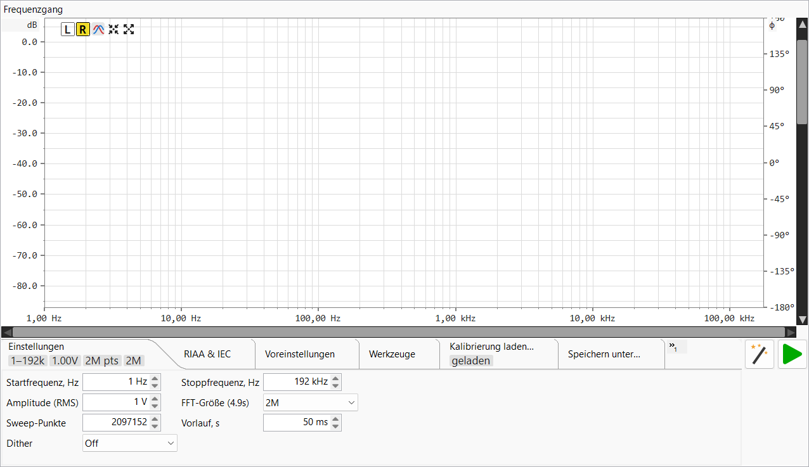

◀ Zurück zum Inhaltsverzeichnis
Diese Seite beschreibt die Bedienelemente des Frequenzgang-Analysators. Informationen zur Messmethode — ein vorgerenderter logarithmischer Sweep, der gegen die abgespielte Referenz entfaltet wird, um Betrag und Phase über das gesamte Band in einem Durchlauf zu ermitteln — finden Sie unter Funktionsprinzip ▸ Frequenzgang sowie in der Zusammenfassung zum logarithmischen Sweep (Farina).
Der Frequenzgang befindet sich auf einem eigenen Hauptreiter (neben dem kombinierten Generator-/Oszilloskop-/FFT-Reiter). Er gibt einen Sweep-Sinus über das Ausgabegerät aus, nimmt das Rücksignal am Eingang auf und stellt den gemessenen Betrag (und wahlweise die Phase) des Prüflings als Funktion der Frequenz dar — mit optionaler RIAA-/IEC-Referenzkurve sowie einer Differenzkurve (Messung minus Referenz) für Phono- und Filterarbeiten.

.frc-/
CSV-Korrekturdateien, um eine bekannte Schnittstellenantwort von der Messung
abzuziehen. Reiter Kalibrierung laden.Die Schaltflächenleiste befindet sich oberhalb der Darstellung.
| Schaltfläche | Funktion |
|---|---|
| L (cyan) | Zeigt den Betrag des linken Kanals. Schließt R aus — die Auswahl einer Option blendet die andere aus. |
| R (gelb) | Zeigt den Betrag des rechten Kanals. |
| Phase | Phasenkurve und die rechte ±180°-Achse ein-/ausblenden. |
| Auto-Setup | Passt das vertikale (Betrags-)Fenster an die sichtbare Kurve an und lässt etwas Abstand oberhalb des höchsten Punktes. Die Frequenzspanne wird nicht verändert. |
| Maximieren | Setzt auf die Standardansicht zurück — volle Frequenzspanne (1 Hz bis zur Nyquist-Grenze) und +20 … −150 dB vertikal. |
| Play (grün) | Startet einen Mess-Sweep; während eines laufenden Sweeps ändert sich der Tooltip zu „Stopp" und ein Fortschrittsdialog erscheint (siehe Messung durchführen). |
Im Darstellungsbereich gilt: Rad: Betrag-(Vertikal-)Achse schwenken; Shift+Rad: Frequenz-(Horizontal-)Achse schwenken; Ctrl+Rad: Betragsachse zoomen (Rad nach oben = heranzoomen); Ctrl+Shift+Rad: Frequenzachse zoomen (Rad nach oben = heranzoomen). Beide Zoomfunktionen sind am Cursor verankert — der Wert (dB oder Frequenz) unter dem Zeiger bleibt beim Skalieren fixiert. Dies entspricht der Konvention in den Oszilloskop- und FFT-Ansichten. Jede Bildlaufleiste schwenkt nur eine Achse — kein Zoomen — und ihr Schieberegler wird durch die Ansicht dimensioniert, sodass er den Zoom widerspiegelt (er wächst/schrumpft beim Skalieren). Klicken Sie auf die leere Leistenbahn, um seitenweise zum Zeiger zu scrollen, oder halten Sie die Taste gedrückt, bis der Regler den Cursor erreicht.
Wenn der Mauszeiger in den Darstellungsbereich bewegt wird, erscheinen ein
gestricheltes Kreuz und ein schwebender Kasten mit der Frequenz am Cursor
(begrenzt auf die Nyquist-Grenze), dem Betrag (dB) in Zeilerhöhe auf der
linken Achse (y = …), dem Betrag der L-/R-Kurve in dB,
der Phase in
Grad bei eingeblendeter Phasenkurve sowie dem Vergleichs-Δ im
Vergleichsmodus. Die Anzeige erlischt, wenn der Zeiger den Bereich verlässt.
Die Einstellungsleiste enthält sieben Reiter. Wie andernorts zeigt die Leiste ein
Überlauf-Symbol », wenn mehr Reiter vorhanden sind als angezeigt werden können.
Die Reiter Einstellungen, RIAA, Kalibrierung und Voreinstellungen zeigen im
eingeklappten Zustand Kacheln mit den wichtigsten Werten (Dienstprogramm, Speichern
und Laden haben keine); bewegen Sie den Mauszeiger über eine Kachel für einen
erläuternden Tooltip.
| Steuerelement | Hinweise |
|---|---|
| Startfrequenz, Hz | Untere Grenze des Sweeps. ≥ 1 Hz. |
| Stoppfrequenz, Hz | Obere Grenze des Sweeps, bis zur Nyquist-Grenze. |
| Amplitude (RMS) | Ausgangspegel zum DAC in Volt RMS bezogen auf die DAC-Kalibrierung; der Tooltip schaltet eine dBV-Anzeige um. Akzeptiert µV / mV / V / dBV. |
| FFT-Größe (Ds) | Analyselänge der Entfaltung als Zweierpotenz von 64k bis 16M. Längere Werte liefern feinere Frequenzauflösung und bessere Rauschunterdrückung auf Kosten einer längeren Sweep-Dauer; die Beschriftung zeigt die resultierende Sweep-Dauer. |
| Sweep-Punkte | Anzahl der Frequenzpunkte des Sweeps (8192 … 10M). Das Rad wechselt zwischen Zweierpotenzen und einem vom Abtastrate abgeleiteten „Nyquist/2"-Eintrag. |
| Vorlauf, s | Stille-/Einregelzeit vor dem eigentlichen Sweep, damit der Signalweg im eingeschwungenen Zustand ist, wenn die Messung beginnt. |
| Dither | Dither-Tiefe für den generierten Sweep, Aus oder 1–31 Bit — dekorreliert den Quantisierungsfehler im abgespielten Signal. |

| Steuerelement | Hinweise |
|---|---|
| RIAA-Kurve anzeigen | Überblendung der RIAA-Referenz, ausgerichtet bei 1 kHz. Diese Option aktiviert die drei nachfolgenden Steuerelemente. |
| RIAA umkehren | Umschalten der Referenz zwischen Aufnahme- (Kodierung) und Wiedergabe- (Dekodierung) Kurve — wählen Sie die zum Prüfling passende. |
| IEC-Korrektur | Fügt den IEC-Tiefton-Hochpassfilter (~20 Hz) zur Referenz hinzu. |
| Vergleich (Messung − Referenz) | Stellt die geglättete Differenz zwischen Messung und RIAA-Referenz um eine 0-dB-Mittellinie dar und passt die Ansicht automatisch auf ca. 2 Hz – 25 kHz bei ±2 dB ein. Erfordert eine vorhandene Messung. Ein blinkendes Banner zeigt die aktive Referenz an. |

Speichern und Abrufen vollständiger Einstellungen- und RIAA-Konfigurationen.
| Steuerelement | Hinweise |
|---|---|
| Namensfeld (Kombinationsfeld) | Neuen Voreinstellungsnamen eingeben oder vorhandenen auswählen. |
| Speichern | Speichert die aktuellen Sweep- und RIAA-Einstellungen unter diesem Namen; ausgegraut, wenn die aktuellen Einstellungen bereits der gewählten Voreinstellung entsprechen. |
| Laden | Wendet die gewählte Voreinstellung auf den aktiven Bereich an. |
| Löschen | Entfernt die gewählte Voreinstellung (mit Bestätigung). |

| Schaltfläche | Funktion |
|---|---|
| Screenshot | Frequenzgang-Darstellung speichern oder kopieren. |
| DAC-Vollaussteuerung kalibrieren | Kalibrierungsassistent für den DAC-Referenzpegel (1 kHz / 1 V RMS). |
| ADC-Vollaussteuerung kalibrieren | Kalibrierungsassistent für den ADC-Referenzpegel (misst eine 1-kHz- Referenz am Eingang). |

Eine Liste von Kalibrierungszeilen. Jede geladene, mit Aktiv versehene
.frc-/CSV-Datei wird de-embedded (subtrahiert) von der Messung,
sodass die Darstellung den Prüfling mit entfernter bekannter Schnittstellenantwort
zeigt.
| Steuerelement (pro Zeile) | Hinweise |
|---|---|
| Pfad | Die geladene Datei oder „Keine Kalibrierung geladen". |
| Aktiv | Korrektur dieser Datei aktivieren/deaktivieren ohne sie zu entladen — deaktivierte Zeilen verbleiben in der Liste für eine schnelle Wiederverwendung. |
| Laden | Datei-Öffnen-Schaltfläche — wählt eine .frc- oder
CSV-Korrekturdatei für diese Zeile. |
| Löschen (×) | Entlädt die Datei dieser Zeile (behält den Aktiv-Status). |
| Hinzufügen (+) | Fügt eine weitere Zeile hinzu, um eine zweite Korrektur in Reihe zu schalten. |
| Entfernen (−) | Löscht diese Zeile. |

Speichert die aktuelle Messung als stereo CSV (Frequenz, L/R-Betrag in
dB, L/R-Phase in Grad). Die Schaltfläche „Speichern" fragt stets nach einem
Pfad, vorausgefüllt mit einem zeitgestempelten freqresp_….frc-Namen.
Speichern ohne vorhandene Messung meldet „Zuerst einen Sweep durchführen".
Auto-Reload: Wenn die gespeicherte Datei bereits als Kalibrierungszeile im FFT-Bereich oder in diesem Frequenzgang-Bereich geladen ist (siehe Kalibrierung laden…), wird diese Zeile unmittelbar nach dem Speichern automatisch neu eingelesen — ein erneutes Messen und Überschreiben einer Kalibrierung wird sofort wirksam, ohne erneutes Durchsuchen.

Lädt eine zuvor gespeicherte Stereo-CSV zurück in die Darstellung. Eine geladene Datei wird als bereits korrigiert behandelt (sie wird nicht neu kalibriert), und ein nicht blinkendes Banner zeigt ihren Pfad oben rechts in der Darstellung an.
Drücken Sie Play, um den Sweep zu starten. Aufnahme und Generator-Wiedergabe werden für den Lauf übernommen, ein modaler Fortschrittsdialog zeigt einen Live-RMS-gegen-Zeit-Pegel, und die Betrags- (und Phasen-)Darstellung aktualisiert sich nach Abschluss der Entfaltung. Die Gesamtdauer entspricht dem Vorlauf zuzüglich der durch FFT-Größe und Abtastrate bestimmten Sweep-Dauer. Da die Referenz der exakt vorgerenderte Sweep ist, der abgespielt wurde, ergibt sich die wahre Übertragungsfunktion des Prüflings, keine Schätzung — siehe Funktionsprinzip ▸ Frequenzgang.